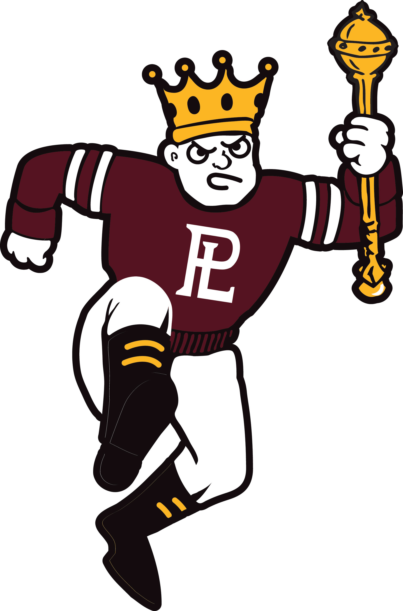

Hello everyone and welcome to my page! Before I start, let me tell you a little about myself. My name is Pranit Singh and I was born in Nepal. I came to America a back in 2004 (oh, how time flies) because of the endless opportunities. My parents have made great sacrifice in order for me to graduate high school and now college for a career that I will be happy and be proud. I have one older brother who is currently playing soccer for the local Nepalese team here in Nebraska. In my free time, I like to play my guitar, walk around the park, read books, and think about the future. I am currently a telephone interviewer at Gallup and it has been a great place where I can not only talk to people across the country, but with my fellow employees there.
In this paragraph, I want to introduce you guys to my family. My dad's name is Pravin Singh, my mother's name is Kiran Singh, and my brother's name is Pratik Singh. Out of the four of us, my mom and I have a similar personality. We both like to eat the same food (samosa) and have the same sort of personality (more serious) whereas my dad and brother are similar in that they are laid back and watch TV (way too much!). My father has a bachelor's degree in humanities and my mother has a high school diploma along with my brother. My parents are very outgoing and have traveled all over the world from India, Europe, and now to America. They are extremely adventurous and don't think about the future but just enjoy the present moment. Last but not least, my brother is a soccer player for a local team of Nepal but his goal is to someday make it to the big leagues and play for a national team. I hope he makes it because I know the hard work and sacrifice along with dedication that he has for soccer, ever since at the tender age of two.
Although many would describe me as a loner, I don't think of myself in that fashion. Certainly I am more of an introvert than an extrovert but I'm not always anti-social. I do indeed like to hang out with my friends, whenever possible, but I just choose to spend a lot of my time on school and work compared to most people. My role models include Albert Einstein and Mark Zuckerberg. Although different fields, each one of them have shown what is possible through hard work and passion. We all have strengths and weaknesses and I am no different. My strengths are competition (extremely competitive!), communicating with others, and futuristic. However, with those come weaknesses such as lack of self-esteem, not trusting others, and being selfish for my own good.
I graduated from Papillion-La Vista High school back in 2014. I am currently a junior at University of Nebraska at Omaha. My favorite subject is Mathematics as I have always been mesmerized and fascinated by how relevant math is to our daily lives. After graduating high school, I attended Creighton University, thinking I wanted to become a doctor. However, after a year, I decided it wasn't the profession and came to UNO thinking I wanted to do nursing so I decided to go from am undecided major to neuroscience. Once again though, I made a mistake but this time, my interest for nursing wasn't the only thing that was gone; instead, I decided that medicine wasn't something I was really interested in. So I changed my major to Economics (BA) with a minor in computer science.
So you may be wondering, what is his background in computer programming? Well, there is none! This is my first time taking any course that has to do with programming and coding so technically, I am a beginner. However, I am really excited about this class and in the short time I've been takingit, I've gained immense knowledge that I can apply, some of which are: creating websites by learning about the different comands and setting up a program (like Loki) in order to get to the structure of the internet. I wanted to try something new and always liked working with computers so I decided to give computer science (why not?! That's why you're in college to start a foundation for a future career!) a try and it has exceeded my expectations. Professor Bob has been great at giving me great feedback and helping me when needed and his lectures are easy to understand and are concise.
I have always felt education was important because of the different opportunities and avenues that it opened up. My parents have always been tough on me because they want me to have a future and a career that I can see myself doing for the rest of my life. Education has always been a big deal in my family because my parents along with those before them understood that learning applies to everything. We are constantly learning (through numbers and words) and applying it daily, whether we realize it or not. So math has always been something that I always took a class in (no matter the situation) and it has stimulated my mind to taking other courses as well. I am currently taking Calculus II at Metropolitan, not only because I love math, but also due to the fact that it is a pre-requisite to get into the Masters program in computer science at UNO.
One of the things I really enjoy doing whenver I'm not working is to play my guitar. Music has always been sort of a shelter of mine. So whenever I'm stressed (due to school, work, etc.), than I simply take a deep breath and just play my guitar and it just creates relaxation and helps me take my mind off of other things. When I was in elementary school, I played the clarinet and the violin thatwas really the first time when I really got an introduction of music and ever since, it has stuck with me. Thus, when people ask me what I do when I'm stressed, I tell them that I play the guitar.
Furthermore, other than playing music, I also like to hang out with my friends by going to parties and movies, read books, and watch videos on the universe. I love reading suspense and mysterious books and who better to read from than the great Stephen King himself. However, I also read books and poems from William Shakespeare as well. Moving on to another subject, I like to spend time learningabout our cosmos and this elicits curiosity in me that never really goes away. The universe has always been a great mystery to me from the planet we live in to our purpose here so whether it's watching lectures on Black Holes with Michio Kaku or learning about General Relativity with Brian Greene, it serves a great stimulant to take my mind off of school and work.
An odd hobby that I like to do in my free time is to do thought experiments. What that means is a time that I set for myself (usually 30 minutes to two hours/day) to go to quiet room and let my imagination flow. There are no bounds for what to think but it's usually on what the future will look like compared to now and all the possibilities that are out there. I usually have an imagine in my mind but not that image is moving and distorting and interacting with the real world in order to make ourlives easier should it become a reality. Some examples that I have done thought experiments on the pastinclude worm holes and spacetime. I know it may sound weird but it really is fun and just is a great way of thinking about the future and who knows, maybe making it happen!